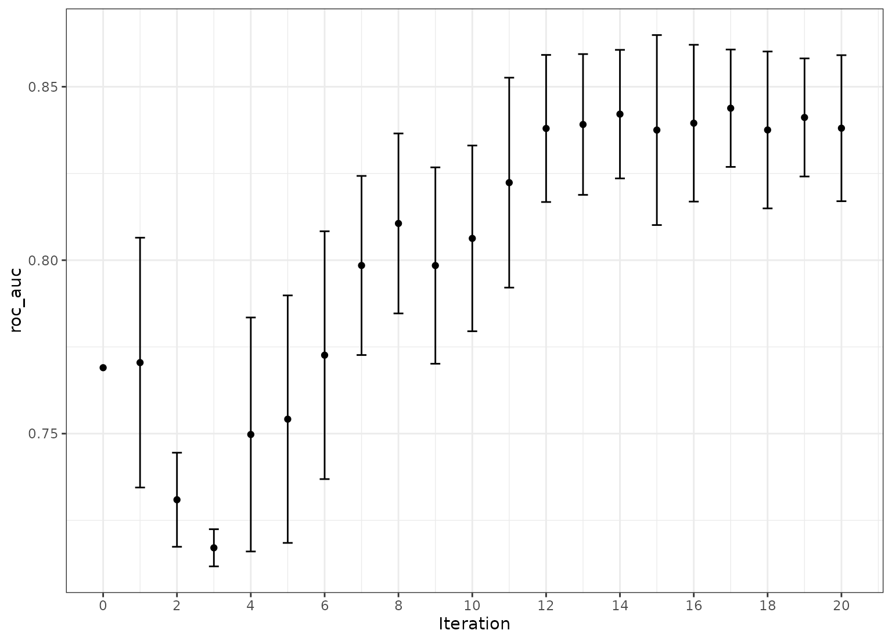

Optimization of model parameters via simulated annealing
Source:R/tune_sim_anneal.R
tune_sim_anneal.Rdtune_sim_anneal() uses an iterative search procedure to generate new
candidate tuning parameter combinations based on previous results. It uses
the generalized simulated annealing method of Bohachevsky, Johnson, and
Stein (1986).
Usage
tune_sim_anneal(object, ...)
# S3 method for model_spec
tune_sim_anneal(
object,
preprocessor,
resamples,
...,
iter = 10,
param_info = NULL,
metrics = NULL,
initial = 1,
control = control_sim_anneal(),
eval_time = NULL
)
# S3 method for workflow
tune_sim_anneal(
object,
resamples,
...,
iter = 10,
param_info = NULL,
metrics = NULL,
initial = 1,
control = control_sim_anneal(),
eval_time = NULL
)Arguments
- object
A
parsnipmodel specification or aworkflows::workflow().- ...
Not currently used.
- preprocessor
A traditional model formula or a recipe created using
recipes::recipe(). This is only required whenobjectis not a workflow.- resamples
An
rset()object.- iter
The maximum number of search iterations.
- param_info
A
dials::parameters()object orNULL. If none is given, a parameter set is derived from other arguments. Passing this argument can be useful when parameter ranges need to be customized.- metrics
A
yardstick::metric_set()object containing information on how models will be evaluated for performance. The first metric inmetricsis the one that will be optimized.- initial
An initial set of results in a tidy format (as would the result of
tune_grid(),tune_bayes(),tune_race_win_loss(), ortune_race_anova()) or a positive integer. If the initial object was a sequential search method, the simulated annealing iterations start after the last iteration of the initial results.- control
The results of
control_sim_anneal().- eval_time
A numeric vector of time points where dynamic event time metrics should be computed (e.g. the time-dependent ROC curve, etc). The values must be non-negative and should probably be no greater than the largest event time in the training set (See Details below).
Value
A tibble of results that mirror those generated by tune_grid().
However, these results contain an .iter column and replicate the rset
object multiple times over iterations (at limited additional memory costs).
Details
Simulated annealing is a global optimization method. For model tuning, it can be used to iteratively search the parameter space for optimal tuning parameter combinations. At each iteration, a new parameter combination is created by perturbing the current parameters in some small way so that they are within a small neighborhood. This new parameter combination is used to fit a model and that model's performance is measured using resampling (or a simple validation set).
If the new settings have better results than the current settings, they are accepted and the process continues.
If the new settings has worse performance, a probability threshold is computed for accepting these sub-optimal values. The probability is a function of how sub-optimal the results are as well as how many iterations have elapsed. This is referred to as the "cooling schedule" for the algorithm. If the sub-optimal results are accepted, the next iterations settings are based on these inferior results. Otherwise, new parameter values are generated from the previous iteration's settings.
This process continues for a pre-defined number of iterations and the
overall best settings are recommended for use. The control_sim_anneal()
function can specify the number of iterations without improvement for early
stopping. Also, that function can be used to specify a restart threshold;
if no globally best results have not be discovered within a certain number
if iterations, the process can restart using the last known settings that
globally best.
Creating new settings
For each numeric parameter, the range of possible values is known as well
as any transformations. The current values are transformed and scaled to
have values between zero and one (based on the possible range of values). A
candidate set of values that are on a sphere with random radii between
rmin and rmax are generated. Infeasible values are removed and one value
is chosen at random. This value is back transformed to the original units
and scale and are used as the new settings. The argument radius of
control_sim_anneal() controls the range neighborhood sizes.
For categorical and integer parameters, each is changes with a pre-defined
probability. The flip argument of control_sim_anneal() can be used to
specify this probability. For integer parameters, a nearby integer value is
used.
Simulated annealing search may not be the preferred method when many of the parameters are non-numeric or integers with few unique values. In these cases, it is likely that the same candidate set may be tested more than once.
Cooling schedule
To determine the probability of accepting a new value, the percent
difference in performance is calculated. If the performance metric is to be
maximized, this would be d = (new-old)/old*100. The probability is
calculated as p = exp(d * coef * iter) were coef is a user-defined
constant that can be used to increase or decrease the probabilities.
The cooling_coef of control_sim_anneal() can be used for this purpose.
Termination criterion
The restart counter is reset when a new global best results is found.
The termination counter resets when a new global best is located or when a suboptimal result is improved.
Parallelism
The tune and finetune packages currently parallelize over resamples.
Specifying a parallel back-end will improve the generation of the initial
set of sub-models (if any). Each iteration of the search are also run in
parallel if a parallel backend is registered.
Censored regression models
With dynamic performance metrics (e.g. Brier or ROC curves), performance is
calculated for every value of eval_time but the first evaluation time
given by the user (e.g., eval_time[1]) is used to guide the optimization.
Also, values of eval_time should be less than the largest observed event
time in the training data. For many non-parametric models, the results beyond
the largest time corresponding to an event are constant (or NA).
References
Bohachevsky, Johnson, and Stein (1986) "Generalized Simulated Annealing for Function Optimization", Technometrics, 28:3, 209-217
Examples
# \donttest{
library(finetune)
library(rpart)
#>
#> Attaching package: ‘rpart’
#> The following object is masked from ‘package:dials’:
#>
#> prune
library(dplyr)
#>
#> Attaching package: ‘dplyr’
#> The following object is masked from ‘package:MASS’:
#>
#> select
#> The following objects are masked from ‘package:stats’:
#>
#> filter, lag
#> The following objects are masked from ‘package:base’:
#>
#> intersect, setdiff, setequal, union
library(tune)
library(rsample)
library(parsnip)
library(workflows)
library(ggplot2)
## -----------------------------------------------------------------------------
if (rlang::is_installed("modeldata")) {
data(two_class_dat, package = "modeldata")
set.seed(5046)
bt <- bootstraps(two_class_dat, times = 5)
## -----------------------------------------------------------------------------
cart_mod <-
decision_tree(cost_complexity = tune(), min_n = tune()) %>%
set_engine("rpart") %>%
set_mode("classification")
## -----------------------------------------------------------------------------
# For reproducibility, set the seed before running.
set.seed(10)
sa_search <-
cart_mod %>%
tune_sim_anneal(Class ~ ., resamples = bt, iter = 10)
autoplot(sa_search, metric = "roc_auc", type = "parameters") +
theme_bw()
## -----------------------------------------------------------------------------
# More iterations. `initial` can be any other tune_* object or an integer
# (for new values).
set.seed(11)
more_search <-
cart_mod %>%
tune_sim_anneal(Class ~ ., resamples = bt, iter = 10, initial = sa_search)
autoplot(more_search, metric = "roc_auc", type = "performance") +
theme_bw()
}
#> Optimizing roc_auc
#> Initial best: 0.81147
#> 1 ♥ new best roc_auc=0.82651 (+/-0.004242)
#> 2 ♥ new best roc_auc=0.83439 (+/-0.009983)
#> 3 ♥ new best roc_auc=0.83912 (+/-0.007893)
#> 4 ♥ new best roc_auc=0.84267 (+/-0.006609)
#> 5 ◯ accept suboptimal roc_auc=0.83949 (+/-0.008792)
#> 6 ◯ accept suboptimal roc_auc=0.83751 (+/-0.01065)
#> 7 + better suboptimal roc_auc=0.84225 (+/-0.009044)
#> 8 ◯ accept suboptimal roc_auc=0.83736 (+/-0.01063)
#> 9 + better suboptimal roc_auc=0.84225 (+/-0.009044)
#> 10 ◯ accept suboptimal roc_auc=0.84225 (+/-0.009044)
#> There were 10 previous iterations
#> Optimizing roc_auc
#> 10 ✔ initial roc_auc=0.84267 (+/-0.006609)
#> 11 ◯ accept suboptimal roc_auc=0.83949 (+/-0.008792)
#> 12 ◯ accept suboptimal roc_auc=0.83736 (+/-0.01063)
#> 13 + better suboptimal roc_auc=0.84225 (+/-0.009044)
#> 14 ◯ accept suboptimal roc_auc=0.84225 (+/-0.009044)
#> 15 ◯ accept suboptimal roc_auc=0.83751 (+/-0.01065)
#> 16 + better suboptimal roc_auc=0.84225 (+/-0.009044)
#> 17 ◯ accept suboptimal roc_auc=0.83949 (+/-0.008792)
#> 18 ✖ restart from best roc_auc=0.8421 (+/-0.007206)
#> 19 ◯ accept suboptimal roc_auc=0.83928 (+/-0.007538)
#> 20 ─ discard suboptimal roc_auc=0.82378 (+/-0.01017)

# }